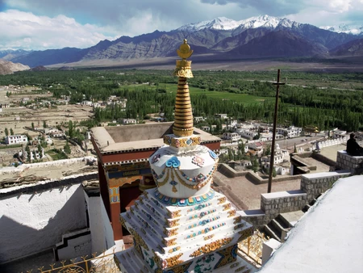

I is for India: 26 Fun Cultural Facts about India, from A to Z!
India has a diverse mix of peoples, climates, scenery, religions, and cultural influences, and a
visit to this fascinating country can be inspiring,
moving and, with a population of 1.1 billion, it can also be overwhelming.
India's intermingling of its diverse culture and religion formulates its uniqueness and charming
soul.
The country is the epicenter of many of the world's religions, and Jainism, Hinduism, Buddhism, and
Sikhism all call India their birthplace.
Understanding India's culture, from A to Z
To help better understand this fascinating country, its people and culture, Global Family Travels
has put compiled some fun cultural facts about India, from A to Z!
Having some of this knowledge will help you reap the greatest rewards when on a journey to Mother
India.
A is for Aarti: Aarti is a Hindu religious ritual of worship, a part of puja.
This ceremony includes fire, songs sung in praise of the worshiped, flowers, incense, music, etc.
The purpose of aarti is to show humility and gratitude to God's divine form.
(Image: Aarti being performed in Varanasi, taken during our Mystical Mamas 2014 tour)
B is for Bindi: A bindi is a colored dot worn on the center of the forehead, commonly by
Hindu and Jain women as a way to show they're spoken for in marriage.
The word comes from the Sanskrit word 'bindu' and is associated with a person's mystical third eye.
From Vedic times (5,000 years ago), it was used to worship the intellect of both men and women to
ensure that thoughts, speech, and action became pure.
(Learn more from this blog: Bindis: Their History and Meaning)
C is for Chai and Chapati: Often times eaten together, Chai is one of the oldest drinks in
India and Chapati is the most commonly eaten bread in Northern India.
Before the British came to India and established tea plantations, chai was a healing concoction made
of herbs and spices. In fact, masala chai is a hybrid of Indian and British tradition.
One story goes that chai was developed by accident when a Buddhist monk on his way to China,
observed the local ritual of chewing a few wild leaves and tried it himself.
Feeling revitalized, he decided to bring it back to India with him.
The Chapati (or roti, which means “bread” in Sanskrit) is the traditional Indian bread.
Its inherits its flat and round shape to its name, chapati, meaning “flat” in Hindi.
It is prepared without any yeast, only with flour and water and it often used as a utensil to scoop
the Indian food that accompanies it.
D is for Diwali: The Festival of Lights, which marks the Hindu New Year and encompasses a
five-day celebration of life and the victories of good over evil. Learn all about Diwali in our
blog: Diwali in India: The Festival of Lights and How it is Celebrated.
E is for Elephant: India is home to between 50 and 60% of all of Asia's wild elephants and
about 20% of the domesticated elephants.
As such, the country is of paramount importance for the survival of the species. The elephant plays
a central role in Indian life and has done for many centuries. Elephants are closely associated with
religious and cultural heritage, playing an important role in the country's history.
They remain revered today. (Learn more when you get to "G"!)
The growing human population in India threatens the elephant's habitat, including illegal
encroachment into protected areas and forest clearing for food production and building roads.
India has some of the strictest elephant legislation in Asia, which should provide adequate
protection for the country’s 3,600 domesticated elephants.
Learn more about the Indian Elephant and what the World Wildlife Fund is doing and how you can help.
F is for Family: Family bonds are very strong in India. In villages, multiple generations
live under the same roof, and even bigger cities this happens.
In Hinduism, the family is more important than the individual and the individual is nothing unless
he or she is part of a family.
Marriage in India is considered not only necessary for the formation of a family but also for
looking after dead family members in the other world.
In fact, "grihastha," (in Sanskrit it means being in the household), is one of the stages of life
through which every Hindu is expected to pass and refers to the second phase of an individual's life
in a four age-based stages of the Hindu ashram system.
Learn more about families in India here.
G is for Ganesh and Gandhi! (we needed to mention both of these important figures in Indian
culture and history!)
Ganesh is the elephant-headed god of wisdom and learning, as well as the remover of obstacles, and
consequently the sign of auspiciousness.
In India, it is customary to begin cultural events calling on Ganesh.
Through non-violence, Mahatma Gandhi led India to independence and inspired movements for civil
rights and freedom across the world.
If you have a chance to travel to India, visit the National Gandhi Museum in Delhi (or Mumbai).
And for more inspiration.
H is for Hinduism: About 80% of the Indian population regard themselves as Hindu.
Hinduism is one of the oldest known religions, originating around 1500 B.C in the Indus Valley (now
modern day Pakistan), when a central Asian people called the Aryans invaded and conquered India.
The Aryan culture gradually combined with the culture of a native people known as the Dravidians,
and Hinduism developed from a blend of the two cultures.
There is an abundance of Hindu temples in India, and the oldest Hindu scriptures are called the
Vedas.
They were composed over a period of nearly 1,000 years, beginning about 1400 B.C.
This stage in Hindu history is often called the Vedic period. During Vedic times, believers
worshiped a number of nature deities.
At the end of the period, the doctrines of reincarnation and karma were adopted.
I is for India: India's intermingling of diverse culture and religion formulates its
uniqueness and charming soul.
With a population of 1.3 billion, the people of India speak 17 different languages and live in
varied landscapes,
from hot deserts and plains to the cold mountain ranges of the Himalayas, but everyone is warm and
friendly and proud to be Indian.
J is Jaipur, the “Pink City:
Jaipur is Rajasthan's capital and is an fascinating historical city and the gateway to India’s most
colorful state. Known as the “Pink” city after the stone used in its buildings and walls,
its bright and chaotic streets ebb and flow with a contrast of old and new vehicles, including
leisurely cycle-rickshaws, motorbikes, buses and camels!
In the midst of this mayhem, the splendors of Jaipur's majestic past are islands of relative calm
evoking a different pace and another world.
At the city's heart, the City Palace continues to house the former royal family; the Jantar Mantar,
the royal observatory, maintains a heavenly aspect; and the honeycomb Hawa Mahal gazes on the bazaar
below. And just out of sight,
in the arid hill country surrounding the city, is the fairy-tale grandeur of Amber Fort, Jaipur's
star attraction.
L is for Ladakh! Once an independent Buddhist kingdom at the crossroads of vital trade routes
between China and the Middle East, Ladakh, often called “Little Tibet” or “Land of the Broken Moon”
Set deep in the Himalaya on the western edge of the Tibetan plateau, the region belongs to the
Indian state of Jammu and Kashmir, and Leh, Ladakh's capital (at 11,500 feet) is one of the highest
and driest inhabited places on earth.
Ladakh is one of Global Family Travels'
favorite destinations to visit and we will always travel to... in fact, we are headed there again
this summer, on our Ladakh: Learn, Serve & Immerse trip.
The Magnificance of Ladakh

M is for Mendhi: Mendhi, also called henna, is a tatoo-like decoration often worn by women at
weddings and festivals.
The paste made to design the decorations is made from henna leaves and oil grinded into a paste,
which is squeezed by the artist thought a cone to make patterns on the hands and feet.
As the design dries, it turns red.
N is for Namaste or Namaskar: Namaste or Namaskar is a customary greeting in India and Nepal
that is said with two hands folded together at the chest and is a way of showing respect.
O is for Odissi: Odissis the ancient traditional dance in India that was performed in temples
by men and women wearing silk sarees, ankle bells and crowns.
It is one of the four most important classical dances in India and takes years of training to do it
well.
P is for Paravati or Parvati: Who is the Hindu Goddess of the mountains, marriage and
households, and represents positive change. Happily, Paravati is always working behind the scenes at
Global Family Travels because she is in our legal name, Paravati Family Travel!
Paravati is worshiped in countless different forms and names all across India from the tiniest
villages to cities. Devotees will scale high mountains and go deep into dark forests to seek her.
The abbreviated story is that Paravati won over the heart of the reclusive God and great yogi,
Shiva, who was meditating in a cave, mourning the loss of his first wife, Sati.
She is also known by many other names: Uma, Guari and Shakti.
Shiva and Shakti: As the cosmic couple, they are worshipped together.
While Shiva is Purusha, the latent masculine energy of the universe, Parvati is Prakruti, the vital
feminine energy.
The Ying and Yang of Hinduism. And, although they appear to be distinct they cannot be separated,
just as one cannot separate heat from fire.
Paravati is also mother of Ganesha and Karitkeya-Parvati.
One she fashioned from her own self and the other was born from Shiva’s seed but not her womb. She
raised both with loving care and attention. The Goddess is celebrated during Navratri in the autumn
all over India in different ways.
For nine nights India revels in her power and energy.
Q is for Quran, or Koran: The Quran is the Islamic book of the prophet Muhammad written in
Arabic that Muslims learn to cite when there are young.
Islam is the second largest religion in India, making up 13.5% of the country’s population with
about 138 million followers.
R is for Rickshaw: India is one of a handful of countries where you can still hop on a
rickshaw (whether it be by bike or auto rickshaw, i.e. ,motor)
In fact, one of the highlights for visitors is seeing the charm of Old Delhi on a bicycle rickshaw.
A maze of narrow lanes, pulsing with energy and color, Old Delhi is the walled city founded by
Mughal Emperor Shah Jahan in 1639, and by Rickshaw,
we will go from Chandani Chowk, Silver Square (Once the center of Delhi), to the various places of
interest, including Jama Masjid, - the one of India’s largest mosques,
and drive past the magnificent Red Fort – a marvel in red sandstone, built on the banks of River
Yamuna by the Mughal Emperor.
The good news for India's air quality is that the country is adding a fleet of 10,000 electric
rickshaws.
S is for Sacred Cow: The cow remains a protected animal in Hinduism today and Hindus do not
eat beef. Most rural Indian families have at least one dairy cow, a gentle spirit who is often
treated as a member of the family. The five products (pancagavya) of the cow — milk, curds, ghee
butter, urine and dung — are all used in puja (worship) as well as in rites of extreme penance.
The milk of the family cow nourishes children as they grow up, and cow dung (gobar) is a major
source of energy for households throughout India. Cow dung is sometimes among the materials used for
a tilak - a ritual mark on the forehead. Most Indians do not share the western revulsion at cow
excrement, but instead consider it an earthy and useful natural product.
Despite their sacred status, cows don't seem very appreciated in India. Visitors are often surprised
to see them walking neglected around city streets, living on garbage from the gutters.
But the cow is honored at least once a year, on Gopastami.
On this "Cow Holiday," cows are washed and decorated in the temple and given offerings in the hope
that her gifts of life will continue.
T is for Tea: India is the second largest producer of tea, which is grown on the slopes of
eastern and southern India. Tea cultivation in India began in the 1700s when it was commercialized
by the British, and is now the world's largest consumer of tea.
The country also produces some of the world's most popular tea varieties including a Assam and
Darjeeling.
U is for Udaipur: Formerly the capital of the Mewar Kingdom, Udaipur is a city in the western
Indian state of Rajasthan
and is often referred to as the "Venice of the east," It is also called the city of lakes surrounded
by beautiful green hills.
The famous lake palace is located in the middle of Lake Pichola, and as one of the most stunning
sites of the city. Udaipur is also home to Jasimand Lake,
which is supposedly the second largest man-made fresh water lake in Asia.
V is for Varanasi: A holy city for Hindus in the northern Indian state of Uttar Pradesh,
Varanasi is thought to be a direct portal to Heaven. Pilgrims come here to wash their bodies in the
Ganges River’s sacred waters and perform funeral rites in the on the ghats of the river (among
people washing laundry and dishes, and kids swimming).
Along the city's winding streets are some 2,000 temples, including Kashi Vishwanath, the “Golden
Temple,” dedicated to the Hindu god Shiva.
W is for the Waterfalls of Karnataka: Karnataka is a federal state located in southern part
of India,
filled with national parks, beaches, and beautiful palaces. Adding to the alluring beauty of
Karnataka are its bountiful waterfalls.
Here is a list of 10 of the best waterfalls in Karnataka, and pictured below is Jog Falls,
which plunges from a height of about 830 feet and is the second highest waterfall in India.
X is for xylophone: The xylophone is an ancient instrument that originated independently in
Africa and Asia.
In India, Kasht tarang is a type of xylophone or marimba used in India in classic Hindu music.
Y is for Yatra: A yatra is a Hindu fair often times held in a temple.
A Yatra festival is also known as the Festival of Chariot. More specifically, a Ratha Yatra is a
festival that involves moving deities Jagannath, Balabhadra, Subhadra and Sudarshana on a chariot
(called a ratha or rotho). In Sanskrit, Ratha means "chariot", and Yatra means "journey";
the festival usually involves an annual procession (journey) of a deity's idols.
Z is for Zanskar: India's Zanskar region of Ladakh is one of the known Buddhist kingdoms of
the western Himalayas above the elevation of 12, 000 feet.
The ancient Zanskar Valley is known for its beautiful scenery,
monasteries and famous for adventure seekers for its trekking trails and river rafting experiences.